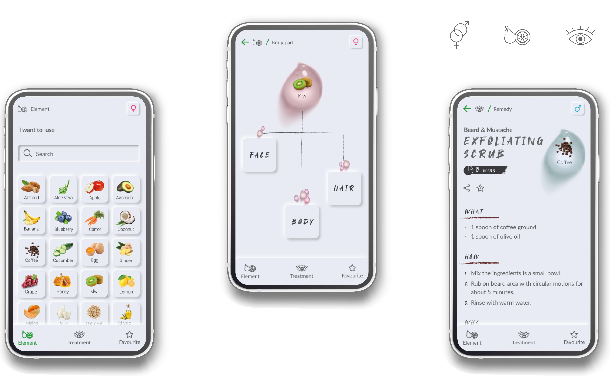
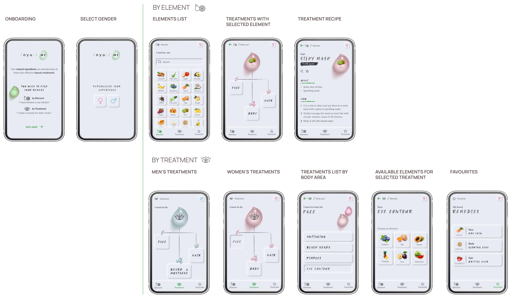
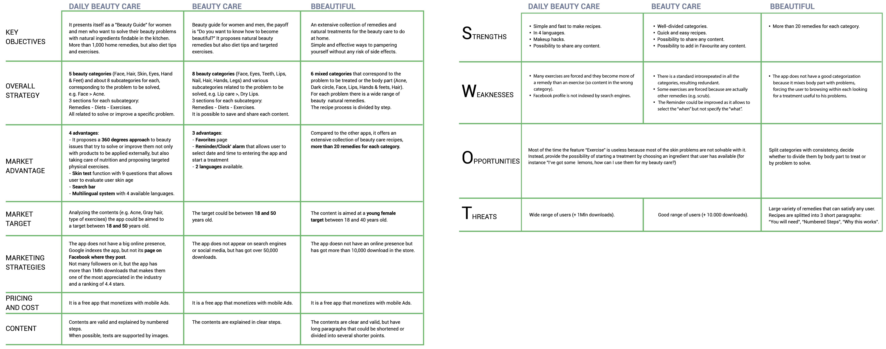
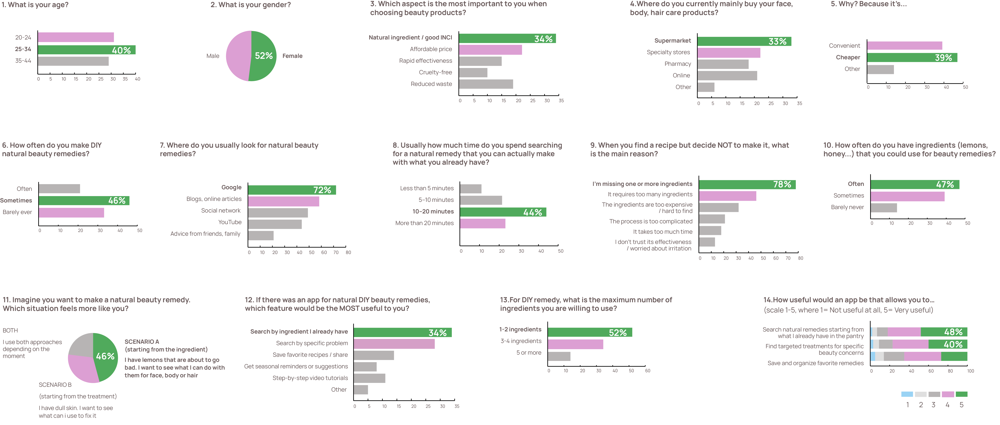
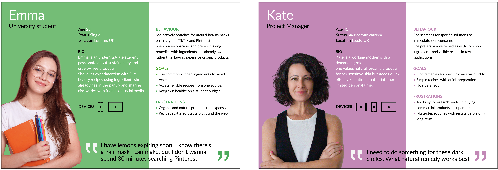
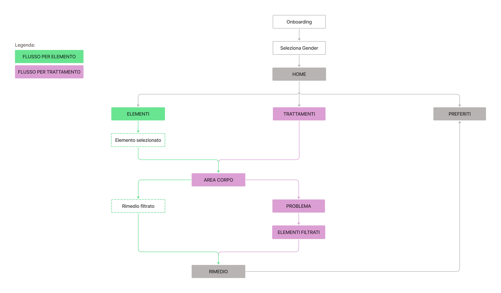
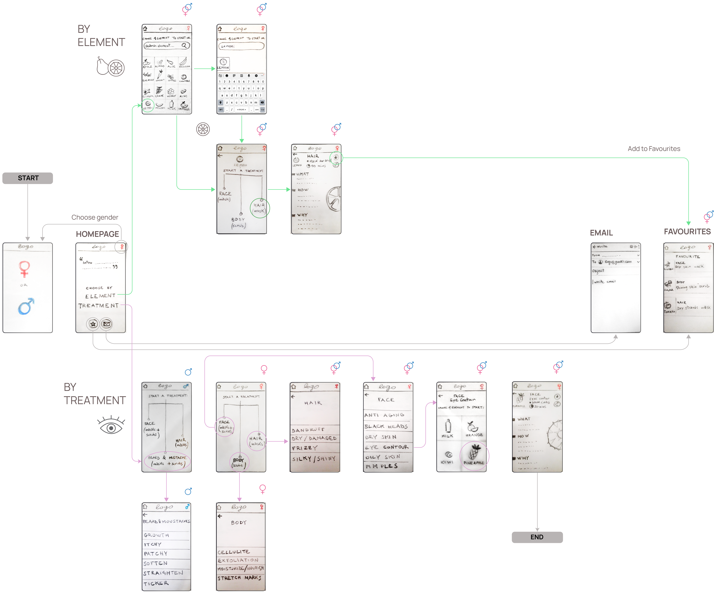
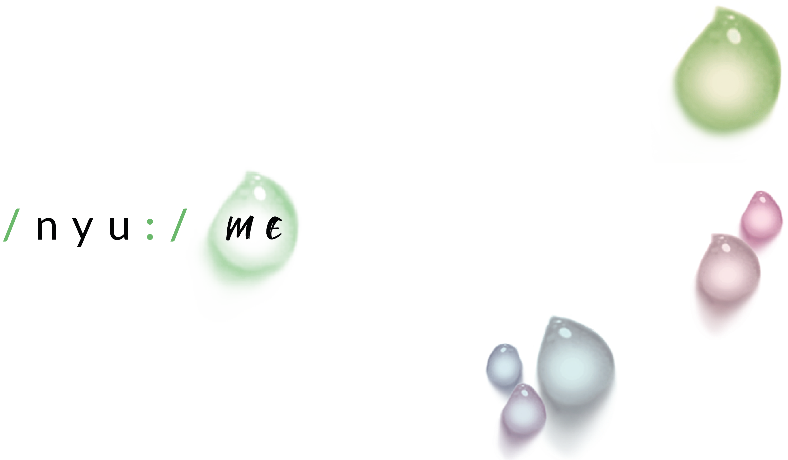
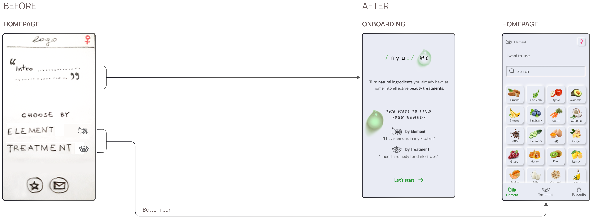

NYU⋅ME, ZERO-WASTE DIY BEAUTY APP
From more than 10 minutes of messy searching to 60 seconds
An app that helps you create face, body and hair treatments with the ingredients you already have at home. Objective: Help people create face, body and hair treatments using natural ingredients they already have at home.
Role: End-to-end Product Designer (UX/UI).
Timeline: 6 weeks.

BUSINESS PROBLEM
| Many people searched but almost nobody followed through
The project was born while I was living in London, where homemade treatments were everywhere
in my work and in my social circle.
One behaviour kept repeating: people searched for natural remedies online, and then rarely made them.
It wasn't a lack of content. Remedies were scattered across blogs and social media, and the ingredients
were often anavailable in the pantry.
Target: users aged 20-44, passionate about natural lifestyle and DIY.
SOLUTION & RESULT
| Start from what you have instead of what you want to fix
I flipped the usual logic of beauty content.
Instead of starting from the problem to treat, the app starts from a real constraint: what can I do with what I have in my pantry?
Two ways in
By Element: ingredient → body area → problem → remedy) or
by Treatment: body area → problem → filtered ingredients → remedy).
1+1 remedies
One main ingredient plus common bases, so the user can always make it.
60 seconds to find a remedy
In usability testing, against the 10+ minutes survey respondents reported online.

COMPETITIVE ANALYSIS
| The market ignores what's in your pantry
I analyzed the three direct competitors in the app stores: Daily Beauty Care (1M+ downloads),
BBeautiful (500K+) and Beauty Care (10K+), using a comparison Matrix and a SWOT.
None of them offers search by ingredient or starts from "what I have in my pantry".
All are organised by beauty category.
The gap is not only in the apps.
Online, blogs and social media are organised by problem to treat,
and they ignore the constraint of what the user already has at home.
The market had plenty of remedies and no way to start from the ingredients.

USER RESEARCH
| Measuring the constraints
Interest in natural beauty was already known, so I didn't need to validate it.
I needed to quantify the constraints and surface preferences.
I ran a quantitative survey with 93 participants aged 20-44, with three objectives:
quantify search time and the causes of drop-off, validate the dual mental model
(ingredient versus problem) and understand the constraints on available ingredients and complexity.
- 44% need 10+ minutes to find a remedy, searching across scattered blogs and social media.
- 52% want to use a maximum of 1-2 ingredients. Recipes that are too complex get abandoned.
- 48% choose based on what they already have.
- 78% give up because of missing ingredients. It is the main cause of drop-off.

PERSONAS
Two profiles emerged from the research.
- Emma looks for a beauty hack starting from the ingredients she already has.
- Kate search for a specific treatment.

DESIGN IMPLICATIONS
- A dual flow, built on opposite mental models
Users can start from an ingredient or from a treatment. - 1+1 remedies
One main ingredient plus universal bases like oil, sugar and flour. It prevents abandonment, because the user can always make the remedy. - Contextual filters in the treatment flow
After selecting a problem the app shows only compatible ingredients, this guarantees a match between problem and ingredient.
INFORMATION ARCHITECTURE
The hierarchy of the app with the structure of two flows.

WIREFLOW

USABILITY TESTING
| 5 tasks, 5 users and no errors
I tested the prototype with 5 users aged 25-32, in a hallway test.
I measured average time per screen and action, task completion time, first tap and heatmaps.
Two scenarios follow below:
Task scenario 1: Element flow
You bought too many lemons and they'll expire soon.
So you've decided to make a hair mask.
Which path would you choose to see what you can do for your hair with lemons?

Task scenarios 2: Treatment flow
You have just downloaded the app and you would like to do a mask for your dark circles.
Where would you go to find the remedy you are looking for?

- 60 seconds task completion time.
- 0% error rate All 5 users completed the tasks without errors.
NAMING & LOGOTYPE
| Nyu⋅Me = new me
The name echoes the English pronunciation of "new me" and is paired
with phonetic symbols that emphasise its sound.
The drop represents the purity of water, evoking naturalness and care.

UI DESIGN ITERATION
| One tap less and a screen to explain why
In the tested wireframes, Elements and Treatments were reached through an intermediate home screen,
opened by a sticky logo. Testing showed it was an extra step.
In the final UI I moved them to the bottom bar, reducing navigation from 2 taps to 1.

DESIGN KIT
| Soft UI balanced between aesthetics and accessibility
Components use distinctive natural colours that stand out against a monochromatic, neutral background.

FINAL THOUGHTS
| How to monetize without betraying zero-waste
Three options I explored:
- Banner ads
- Affiliate links at the end of each remedy: with partners like organic e-commerce and local producers.
- Freemium: free 1+1 remedies, subscription for exclusive seasonal no-waste recipes.